elmer.unibas.ch
1. Homepage of Franz-Josef Elmer
Welcome on the Home Page of Franz-Josef Elmer
| Phone: +41 61 923 10 55 Email: Snail mail: Dachsweg 8b, CH-4410 Liestal, Switzerland |
I am a theoretical physicist and software developer. I worked in nonlinear dynamics and physics of friction.
- A brief CV
- Brief describtions of my research topics
- My publication list
- Gallery of Java applets:
- Open-Source projects:
- Classycle: Analysing tools for Java class and package dependencies
- JCCKit: Java chart construction kit
- JFraCE: Java framework for computer emulation
- Music Micro Analysis Tools
© 1998-2009 Franz-Josef Elmer, last modified, 2009-09-01.
2. A Brief CV of Franz-Josef Elmer
| Dr. Franz-Josef Elmer |
Curriculum Vitae
| 1957 | born in Frankfurt am Main, Germany |
| 1964-67 | Visiting public schools and high schools in Frankfurt am Main and Dieburg, Germany. |
| 1976 | Finishing high school with the Abitur degree. |
| 1976-81 |
Studying physics at the
Technische Hochschule Darmstadt, Germany. Title of the Diploma thesis: Markovian Approximations of Robertson's Theory Supervisor: Prof. Dr. E. Fick |
| 1981-86 | Assistant and PhD student of Prof. E. Fick at the Institut für Festköphysik at the Technische Hochschule Darmstadt. |
| 1987 | Achieving the degree Dr. rer. nat. (equivalent to a PhD)
at the Technische Hochschule Darmstadt. Title of the thesis: Spatial Pattern Formation due to Ferromagnetic Resonance Instability |
| 1987-96 | Post-doc assistant of Prof. H. Thomas at the Institut für Physik at the Universität Basel, Switzerland. |
| 1991 | Research fellow at the University of California at San Diego by Prof. H. Suhl. Grant from the Volkswagenstiftung. |
| 1993 | Achieving the Habilitation degree (i.e., venia docendi) in Theoretical Physics at the Universität Basel. |
| Aug.-Sept. 1995 | Research guest at the Technische Hochschule Darmstadt by Prof. H. Sauermann. |
| Feb.-March 1997 | Research guest at the University of Tel Aviv by Prof. J. Klafter. |
| 1997/98 | Research fellow at the Max-Planck Institut für Strömungsforschung in Göttingen by Prof. T. Geisel. |
| 1998-2007 | Software developer in various companies in Basel. |
| since 2007 | Software developer at the Center for Information Sciences and Databases a part of the Biosystems Science and Engineering of the ETH Zürich. |
Since 1988 I am married to Dr. Stefanie Stadler. She is working in developmental psychology of music. We have two kids a son (born 1989) and a daughter (born 1991).
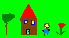
Back to my home page3. Research Topics of Franz-Josef Elmer
| Dr. Franz-Josef Elmer |
Topics of Research
A click on an image leads to more informations including pictures and movies.
| 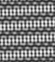 Since more than a decade I'm working in nonlinear dynamics and pattern formation far from equilibrium. Topics in this fields are parametrically excited spin waves, pattern formation in strongly nonlocal systems, propagation of fronts into unstable states, and nonlinear dynamics of atomic force microscopy. |
| 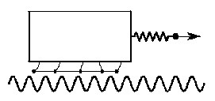 Now I am mainly working on solid-solid friction and nanotribology. Together with two of my former PhD students ( Torsten Strunz and Michael Weiss ) I have studied the dynmical properties of the Frenkel-Kontorova model and the Frenkel-Kontorova-Tomlinson model. Other topics are statistical mechanics of solid-solid friction, controlling friction, and self-organized criticality. |
Don't forget to have a look on my list of publications with preprints which can be loaded down.
Back to my home page
4. Publication List of Franz-Josef Elmer
| Dr. Franz-Josef Elmer |
List of publications
Back to my home page
5. Brownian Motor
Brownian Motor
In his famous lectures Richard Feynman discussed the impossibility to violate the second law of thermodynamics
by a ratchet mechanism. The simplest model for a ratchet is an overdamped Brownian particle in an asymmetric
but spatially periodic potential (with asymmetry  and period L). Due to the fluctuating force caused by the pushing molecules of the
surrounding fluid or gas the Brownian particle may overcome the potential barrier moving to the left or to the
right. The probabilities for both directions are equal. Thus on average the particle does not move. Hence building
a motor which turns thermal energy into mechanical work from a single heat bath is impossible.
and period L). Due to the fluctuating force caused by the pushing molecules of the
surrounding fluid or gas the Brownian particle may overcome the potential barrier moving to the left or to the
right. The probabilities for both directions are equal. Thus on average the particle does not move. Hence building
a motor which turns thermal energy into mechanical work from a single heat bath is impossible.
But the ratchet can be turned into a so-called a Brownian motor that seems to violate the second law
of thermodynamics. The idea is to turn the ratchet potential periodically on and off with a frequency 
Instructions
|
Why is a Brownian motor not a perpetuum mobile of the second kind?
As long as the ratchet potential is off the particle will move diffusively according to a (biased) random walk, leading to a variance in position of
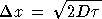
and a mean position of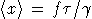
, where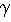
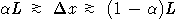
for the variance holds, the particle on average gets trapped into the minimum left to the starting point. The maximum flux is obtained if the switching timeWhere does the energy come from leading to a drift against the external force? The energy does not come from the heat bath but from the ratchet potential when it is switched on. At that moment the potential energy of the particle will be suddenly increased. In the simulation this can be seen by a sudden increase of the energy bar. But most of the energy pushed into the system will be just dissipated into the heat bath due to the relaxation of the particle into a potential minima. Only a tiny portion will be used for doing work. Thus a Brownian motor does not violate any law of thermodynamics it only turns one type of work into another one. Nevertheless the fluctuating force due to the heat bath is essential for a Brownian motor.
For more details and possible applications in biology and chemistry read
the following review article:
R.D. Astumian: Thermodynamics and Kinetics of a Brownian Motor,
Science 276, p. 917-922 (1997).
Translations of this side: Romanian
Idea: Roland Ketzmerick, Max-Planck Institut für Strömungsforschung, Göttingen
Text: Matthias Weiß, Max-Planck Institut für Strömungsforschung, Göttingen, Franz-Josef Elmer Institut für Physik, Uni Basel
Design: Roland Ketzmerick, Max-Planck Institut für Strömungsforschung, Göttingen, Franz-Josef Elmer, Institut für Physik, Uni Basel
Java programming: Franz-Josef Elmer, Institut für Physik, Uni Basel
Please send Comments and bug reports to Franz-Josef doht Elmer aaaat unibas doht ch
This page has been created in May 1998. It was last updated on September 1, 2009.
6. The roots of a polynomial
The roots of a polynomial
This is a Java applet which calculates the roots of the polynomial
On the left hand side there are control panels where you can change the order of the polynomial and its coefficients. Just manipulate the scrollbar or enter a number into the number field. The result is show graphically in the complex number plane (x-axis is the real part, y-axis is the imaginary part). On the right-hand side the numerical result is shown. Note that the sign of the real part decides the color code. Below the roots the Hurwitz determinants are shown. Their color code is determined by their sign. They are needed for the Routh-Hurwitz theorem.
| Fun with the applet |
|---|
Here are nice games you can play:
|
The Routh-Hurwitz theorem
Calculating analytically the roots of a polynomial of order higher than two
is very cumbersome and in general impossible if the order is
larger than five. But often you do not need the roots of a polynomial explicitely.
For example, when you do stability analysis for a fixed point in a (nonlinear)
dynamical system you get a characteristic polynomial for
the eigenvalues of the Jacobian. To answer the question on stability you
don't need the eigenvalues. You only want to know whether all eigenvalues have
negative real parts or not. And here comes the neat
theorem of Routh and Hurwitz
which helps you a lot. It says:
The real part of all roots of the polynomial
are negative if and only if all upper-left determinants of the matrix
|
|
|||||||||||||||||||
|
|
with am=0 for m<0, are positive.
Back to my home page
7. The Pendulum Lab
|
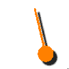 |
by Franz-Josef Elmer, University of Basel, Switzerland
Welcome to the Pendulum Lab! This is a virtual laboratory where you can do hands-on experiments at rigid pendula. Together with the material presented in the lecture room, you can learn basic issues like harmonic oscillator and resonance but also advanced topics like parametric resonance, nonlinear dynamics, and chaos. Playing with the pendula in the lab, you only need curiosity and a browser which can run Java applets. However, to understand the mini-lecture, it is helpful to have some basic knowledge of calculus.
If you want to play with the Pendulum Lab offline, you are welcome to download the whole lab:
|
|
MERLOT Classics Award 2011 in Physics |
8. The Friction Lab
|
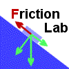
© 2001, e-mail: Franz-Josef doht Elmer aht unibas doht ch last modified: 2001/09/24 |
The Friction LabWelcome to the Friction Lab. This site is denoted to the physics of solid friction. In the lab you will find several virtual experiments and simulations of models. They are all realized as Java Applets. There are also pages with explanations and documents (talks, papers etc.). Enjoy the Friction Lab! |
9. Researchs Topic of Franz-Josef Elmer: Nonlinear Dynamics and Pattern Formation
| Dr. Franz-Josef Elmer |
Nonlinear Dynamics and Pattern Formation
Parametrically excited spin waves
This was the topic of my PhD thesis. I have studied theoretically the formation and the dynamics of dissipative patterns caused by parametric excitation of spin waves. Parametric excitation of waves is caused by parametric resonance which is an instability phenomenon. For the first time analytical methods (i.e., multiple-scale perturbation theory and amplitude equations) well-known from hydrodynamic pattern formation has been applied to parametrically excited spin waves. A simple toy-model is discussed in Ref. 2, 3, and 5 of the publication list. A comparison between pattern formation in hydrodynamics and high-power ferromagnetic resonance has been published in Ref. 10. During my stay at the University of California at San Diego (UCSD) I started to do more realistic calculations with experimental predictions. The results of this work appeared in Ref. 13, 16, 20, and 26. The influence of hybridization on the type and the threshold of the main instability has been studied in Ref. 27.|
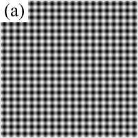 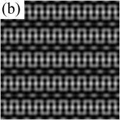 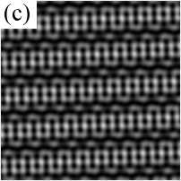 |
| These are examples of stationary patterns of a ferromagnetic insulating film which is driven by out-of-plane parallel pump (i.e., the static magnetic field is perpendicular to the film plane and the magnetic field of a microwave is parallel to the static field). The images are synthetic photographs generated on the computer. They simulate real photographs where Faraday rotation is used to visualize the patterns. Fig. (a) is a square pattern built by two standing waves. Fig. (b) and (c) are built up by three standing waves forming a periodic pattern and a quasi-periodic one, respectively. These patterns are in general not stationary. The dynamics switches between them, a process which is very sensitive on noise. For more details see Ref. 26. There is also movie (MPEG, 1327Kb) which shows the pattern switching. |
Nonlocal pattern formation
In a series of papers I have discussed on a general level the influence of nonlocal or global terms in the equation of motion on the formation of patterns (see Ref. 4, 6-8). As an application of this theory it turned out that under certain conditions a new kind of oscillatory behavior in the electrothermal instability of the ballast resistor is possible (see Ref. 9). Also parallels in the kind of nonlocality between hydrodynamics and micromagnetism has been uncovered (see Ref. 10).Front propagation into an unstable state
During my stay at USCD I discussed with Harry Suhl and a student of him a simple micromagnetic model. We were interested into the problem of propagation of a stable state into a linearly unstable one. We found a new dynamical behavior namely that the initial front can split into two fronts propagating with different velocities leaving an unstable state in-between. Together with Jean-Pierre Eckmann and a student of him we were able to show that this a generic behavior. For more details see Ref. 14 and 17.Dynamical behavior of atomic force microscopy
An atomic force microscope is a linear oscillator which becomes nonlinear due to the interaction with the sample. Some preliminary results appeared in Ref. 15. Recently I have calculated the renormalization of the eigen frequencies due to induced motion in a medium (see Ref. 28).Back to my home page
10. Research Topic of Franz-Josef Elmer: Solid-Solid Friction
| Dr. Franz-Josef Elmer |
Solid-Solid Friction
Self-organized criticality (SOC)
I am investigating simple mechanical models which are relevant for dry friction (i.e., Frenkel-Kontorova model, Frenkel-Kontorova-Tomlinson model, Burridge-Knopoff model, train model). Some of this models show self-organized criticality (SOC). Results concerning the Frenkel-Kontorova model are published in Ref. 12, 18, and 21. I have also investigated a Frenkel-Kontorova-like model which may be relevant for Barkhausen noise (see Ref. 11 and 19). In Ref. 22 I gave a review on SOC in dry friction concerning these models as well as experiments. Recently I found that SOC with superposed log-periodicities in the avalanche statistics occurs in the train model for a certain type of friction law (see Ref. 32).
|
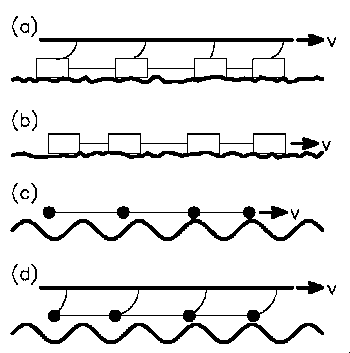 |
Several mechanic models showing power laws in the avalanche statistics: (a) Burridge-Knopoff (earthquake) model, (b) train model, (c) Frenkel-Kontorova model, and (d) Frenkel-Kontorova-Tomlinson model. Neigboring blocks or particles are coupled by springs. In model (b) and (c) the right end of the chain is pulled very slowly, whereas is case (a) and (d) a rigid plate is pulled. The chain is connected at the plate by leaf springs. In the first two models the interaction with the surface is modeled by a phenomenological friction law. For the two other models, this law is replaced by a spatially periodic potential and viscous friction. Model (b) and (c) show real SOC, whereas the two other models have an intrinsic cutoff where the power-law regime ends. The cutoff scales with the inverse of the square root of stiffness of the leaf springs. For more details see Ref. 22. |
|
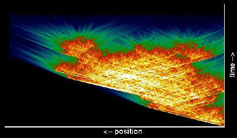 |
An avalanche in the Frenkel-Kontorova model. The avalanche starts on the right hand side at the pulled particle. There is a shock wave propagating to the left. The color codes the kinetic energy of the particles. For more details see Ref. 18. |
Back to my home page
11. Franz-Josef Elmer: Differentialgleichungen in der Physik
| Dr. Franz-Josef Elmer |
Franz-Josef Elmer
Differentialgleichungen in der Physik
Verlag Harri Deutsch, 1997, ISBN 3-8171-1550-4Inhaltsverzeichnis
| 1 | Einleitung | 7 | ||
| 1.1 | Grundbegriffe | 7 | ||
| 1.2 | Nützliche Lösungsstrategien | 11 | ||
| 1.2.1 | Das Reduktionsprinzip | 11 | ||
| 1.2.2 | Das Superpositionsprinzip | 14 | ||
| 1.2.3 | Das Prinzip des passenden Ansatzes | 14 | ||
| 1.2.4 | Das Transformationsprinzip | 15 | ||
| 1.2.5 | Näherungsmethoden und Numerische Integration | 16 | ||
| 2 | Gewöhnliche Differentialgleichungen erster Ordnung | 17 | ||
| 2.1 | Lineare Differentialgleichungen erster Ordnung | 18 | ||
| 2.2 | Nichtlineare Differentialgleichungen erster Ordnung | 21 | ||
| 2.2.1 | Transformationsmethoden | 22 | ||
| 3 | Lineare, gewöhnliche Differentialgleichungen | 27 | ||
| 3.1 | Homogene, lineare Differentialgleichungen | 28 | ||
| 3.1.1 | Reduktionsverfahren von d'Alembert | 30 | ||
| 3.1.2 | Differentialgleichungen mit konstanten Koeffizienten | 32 | ||
| 3.1.3 | Die Eulersche Differentialgleichung | 36 | ||
| 3.1.4 | Die Potenzreihenentwicklung | 37 | ||
| 3.1.5 | Das Sturm-Liouville-Problem | 51 | ||
| 3.2 | Inhomogene lineare Differentialgleichungen | 58 | ||
| 3.2.1 | Methode der Variation der Konstanten | 58 | ||
| 3.2.2 | Integraltransformationen und Operatormethode | 59 | ||
| 3.2.3 | Die Greensche Methode | 65 | ||
| 4 | Partielle Differentialgleichungen | 71 | ||
| 4.1 | Separation der Variablen | 73 | ||
| 4.2 | Die Greensche Methode für Anfangswertprobleme | 77 | ||
| 4.3 | Methode der Charakteristiken | 80 | ||
| 4.3.1 | Hyperbolische Differentialgleichungen erster Ordnung | 80 | ||
| 4.3.2 | Hyperbolische Differentialgleichungen höherer Ordnung | 85 | ||
| 5 | Exakte Lösungen nichtlinearer Wellengleichungen | 91 | ||
| 5.1 | Dispersive Wellen | 91 | ||
| 5.2 | Schockwellen | 93 | ||
| 5.2.1 | Nichtstetige Schockwellen | 94 | ||
| 5.2.2 | Stetige Schockwellen | 99 | ||
| 5.3 | Solitonen | 102 | ||
| 5.3.1 | Inverse Streutheorie | 103 | ||
| 5.3.2 | Die Hirota-Methode | 105 | ||
| 5.3.3 | Andere Differentialgleichungen mit Solitonenlösungen | 109 | ||
| 6 | Qualitatives Verhalten nichtlinearer Differentialgleichungen | 113 | ||
| 6.1 | Klassifikation nichtlinearer Differentialgleichungen | 114 | ||
| 6.2 | Klassifikation der Lösungen | 116 | ||
| 6.2.1 | Fixpunkte | 117 | ||
| 6.2.2 | Grenzzyklen | 120 | ||
| 6.2.3 | Quasiperiodische Bahnen | 124 | ||
| 6.2.4 | Chaotische Bahnen | 127 | ||
| 6.3 | Die dynamische Stabilität nichtwandernder Mengen | 138 | ||
| 6.3.1 | Lineare Stabilitätsanalyse | 139 | ||
| 6.4 | Bifurkationstheorie | 145 | ||
| 6.4.1 | Stationäre Bifurkationen | 147 | ||
| 6.4.2 | Hopf-Bifurkation | 153 | ||
| 7 | Näherungsmethoden | 157 | ||
| 7.1 | Störungstheorien | 158 | ||
| 7.1.1 | Die WKB-Methode | 160 | ||
| 7.1.2 | Mehrskalenstörungstheorie | 167 | ||
| 7.2 | Nichtstörungstheoretische Methoden | 176 | ||
| 7.2.1 | Methode der kleinsten Abweichung | 177 | ||
| 7.2.2 | Ritzsche Variationsmethode | 178 | ||
| 7.2.3 | Projektionsmethoden | 180 | ||
| 8 | Numerische Lösungsmethoden | 187 | ||
| 8.1 | Anfangswertprobleme | 188 | ||
| 8.2 | Randwertprobleme | 197 | ||
| 8.2.1 | Schießverfahren | 197 | ||
| 8.2.2 | Relaxationsverfahren | 199 | ||
| A | Einige nützliche Methoden und Begriffe | 205 | ||
| A.1 | Zur Nomenklatur | 205 | ||
| A.2 | Lösungsmethoden für algebraische Gleichungssysteme | 207 | ||
| A.2.1 | Lineare Gleichungssysteme | 207 | ||
| A.2.2 | Nichtlineare Gleichungssysteme | 209 | ||
| A.3 | Fourier-Transformation | 210 | ||
| A.4 | Die Gamma-Funktion | 212 | ||
| A.5 | Die Diracsche Delta-Funktion | 213 | ||
| A.5.1 | Definition | 213 | ||
| A.5.2 | Eigenschaften und Rechenregeln | 214 | ||
| A.6 | Funktionale und Funktionalableitungen | 215 | ||
| B | Literatur | 217 | ||
Back to my home page
12. Stability and Bifurcation
|
|
|
Stability and Bifurcation
In linear dynamics, one seeks the fundamental solutions from which one can build all other solutions. In nonlinear dynamics, the main questions are: What is the qualitative behavior of the system? Which and how many non-wandering sets (i.e. a fixed point, a limit cycle, a quasi-periodic or chaotic orbit) occur? Which of them are stable? How does the number of non-wandering sets change while changing a parameter of the system (called control parameter)? The appearance and disappearance of a non-wandering set is called a bifurcation. Change of stability and bifurcation always coincide. There are the two different sides of the same medal!
1. Stability
A non-wandering set may be stable or unstable. There are two types of stability, a weaker and a stronger one:
- Lyapunov stability:
- Every orbit starting in a neighborhood of the non-wandering set remains in a neighborhood.
- Asymptotic stability:
- In addition to the Lyapunov stability, every orbit in a neighborhood approaches the non-wandering set asymptotically.
Thus, a non-wandering set is either asymptotically stable, marginally stable (i.e. only Lyapunov stable), or unstable. Asymptotically stable non-wandering sets are also called attractors. The basin of attraction is the set of all initial states approaching the attractor in the long time limit.
How can we check the stability of a non-wandering set? There is a scheme called linear
stability analysis: Assuming u0(t) is the orbit
you want to check whether it is stable or not.
It is asymptotically stable if any infinitesimal small perturbations
u
decays. Thus, make the ansatz
and
respectively. These linear equations of motion are justified as long as the orbit doesn't go
too far away from 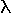
Calculating the roots of a polynomial analytically is impossible if its order is greater than five, and tedious if the order is greater than two. For time-continuous system, the question on stability can be answered without explicitely calculating the eigenvalues, thanks to the theorem of Routh and Hurwitz. This theorem says that the real parts of all roots of a polynomial are negative if and only if certain conditions are fulfilled which can be easily calculated. This theorem is useful even in the case of a two-dimensional phase space where the characteristic polynomial is quadratic: Both eigenvalues have negative real part if and only if the determinant DF(u0) is positive and the trace of DF(u0) is negative. The figure below shows a classification scheme of the fixed points of two-dimensional phase spaces.
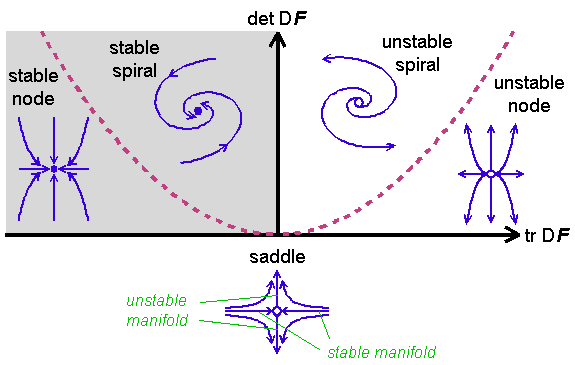
The notion spiral and node are inspired by the flow near the fixed point. A pair of conjugated complex eigenvalues lead to a spiral, whereas a node is causes by two real eigenvalues of the same sign. Real eigenvalues of different sign lead to a saddle. In general, a saddle is a fixed point where at least one eigenvalue has a positive real part but also at least one eigenvalue has a negative real part. Near a saddle, an orbit is usually attracted at first but repelled later on. There are points in the phase space which approach the fixed point for t
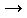
. They form the stable manifold. The eigenspace for the eigenvalues with negative real part is tangential to the stable manifold. The unstable manifold are built by all points approaching the fixed point for t - . Saddles and their stable manifolds are usually the boundaries of a basin of attraction. The undriven pendulum has a saddle point (corresponding to the upside-down equilibrium position) and a spiral if2. Bifurcation
The number of attractors in a nonlinear dynamical system can change when a system parameter is changed. This change is called bifurcation. It is accompanied by a change of the stability of an attractor. In a bifurcation point, at least one eigenvalue of the Jacobian gets a zero real part. There are three generic types of so-called co-dimension-one bifurcations (the term codimension counts the number of control parameters for which fine tuning is necessary to get such a bifurcation):
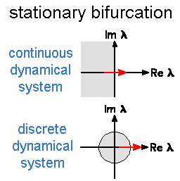 In a stationary bifurcation, a single real eigenvalue crosses the boundary of stability. In the Pendulum Lab, stationary bifurcations of limit cycles occur quit often. They are stationary bifuractions of fixed points in a discrete dynamical system because limit cycles are fixed points in the Poincaré map. |
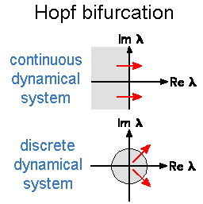 Hopf bifurcations occur when a conjugated complex pair crosses the boundary of stability. In the time-continuous case, a limit cycle bifurcates. It has an angular frequency which is given by the imaginary part of the crossing pair. In the discrete case, the bifurcating orbit is generally quasiperiodic, except that the argument of the crossing pair times an integer gives just 2 |
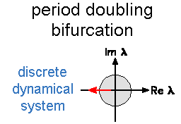 In discrete dynamical systems, a certain bifurcation is possible which is absent in continuous systems: The period doubling bifurcation. Here, a real eigenvalue crosses the boundary of stability at -1. In a period-doubling bifurcation point, a period-2 orbit bifurcates. You can find this type of bifurcation quite often in the Pendulum Lab. |
Crossing the boundary of stability only indicates a bifurcation point and the type of the bifurcating solutions. But it doesn't tell you how and how many new solutions bifurcate or disappear in a bifurcation point. To answer this question one has to take into account the leading nonlinear terms. This might appear to be a difficult task. But fortunately, a theorem and a transformation help us simplifying this analysis:
- Center manifold theorem:
- It helps to reduce the dimensionality of the phase space to the dimensionality of the so-called center manifold which in the bifurcation point is tangentially to the eigenspace of the marginal modes of the linear stability analysis (i.e., the eigenfunctions which neither decay nor expand exponentially). The center manifold theorem says, the dynamics can be projected onto the center manifold without loosing any significant aspect of the dynamics. Thus, the dynamics near a stationary co-dimension-one bifurcation can be decribed by an effective dynamics in a one-dimensional subspace. Hopf-bifurcations need a two-dimensional phase space. This is exactly the minimum dimension for limit cycles in continuous dynamical systems and for quasiperiodic orbits in discrete dynamical systems. Period-doubling bifurcations need only a one-dimensional phase space.
- Transformation to normal form:
- The dynamics projected onto the center manifold can by transformed to so-called normal forms by a nonlinear transformation of the phase space variables.
Below, the main normal forms (for continuous dynamical systems) of stationary co-dimension-one bifurcations are shown. The phase space variable is u. The control parameter is
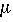
. The bifurcation point is at = 0. The direction of motion in the one-dimensional phase space is shown by arrows. Stable (unstable) fixed points are drawn as red solid (dotted) lines. The normal forms are shown in blue.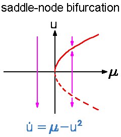 The generic case of stationary co-dimension-one bifurcation is a saddle-node bifurcation. It is generic (that is, the probability is finite to pick a dynamical system having a saddle-node bifurcation) because fixed points lie on a smooth one-dimensional manifold in the combined space of phase space and control parameter. The minima and maxima of as a function of the curve length denote saddle-node bifurcations where a stable fixed point (a node) annihilates with an unstable one (a saddle in more than one dimension). A combination of a minimum and a maximum lead to the phenomenon of bistability where in a certain interval of the control parameter, two stable attractors exist with an unstable one in-between. Bistability is responsible for hysteresis in many physical and technical systems, as for example the button on your computer mouse. This phenomenon occurs if one sweeps the control parameter relatively slowly beyond the interval of bistability. When the interval of bistability is left the attractor disappears in a saddle-node bifurcation, and the system suddenly jumps to another attractor. For the example of a mouse button, this means that the button makes click even if pressing the button extremely slowly (try it!). Now sweeping the control parameter in the other direction has no effect when the bistability interval is reentered. Thus, the mouse button remains in the pressed state even if the pressure is diminished below the pressure necessary for the previous click. Leaving the bistability interval at its other end, the system has to jump towards the former attractor. And the mouse button makes again click (maybe it sounds different than the first click). In the Pendulum Lab, bistability occurs e.g. in the foldover effect. |
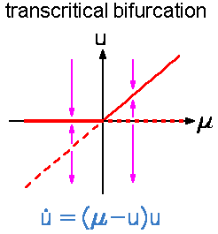 The transcritical bifurcation occurs when in the combined space of phase space and controlparameter space two different manifolds of fixed points cross each other. At the crossing point the fixed points exchange there stability property. That is, the unstable fixed point becomes stable and vice versa. Note, that beyond the bifurcation point the number of fixed points has not changed contrary to saddle-node bifurcation where two fixed points appear or disappear. A transcritical bifurcation is not a generic bifurcation in a phase space with more than one dimension because it is unlikely that two lines cross each other in a space with more than two dimensions. |
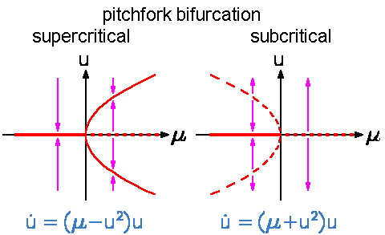 Pitchfork bifurcations are possible in dynamical systems with an inversion or reflection symmetry. That is, an equation of motion that remains unchanged if one changes the sign of all phase space variables (or at least for one). An example is the undriven pendulum. Usually, such a system has a symmetric fixed point (or limit cycle). Pitchfork bifurcations are the generic bifurcations when such a symmetric solution changes its stability. The bifurcating solution does not have the full symmetry of the equation of motion. This phenomenon is called broken symmetry. A solution with a broken symmetry does not occur in isolation because the broken symmetry applied onto such a solution generates a new solution where the same symmetry is broken. All such solutions build a family. Therefore, always two fixed points with a broken symmetry bifurcate at once in a pitchfork bifurcation. Both are either stable (supercritical pitchfork bifurcation) or unstable (subcritical pitchfork bifurcation).In the Pendulum Lab, pitchfork bifurcations of limit cycles occur quite often. As an example, try the following experiment: Shake a horizontally driven pendulum faster than its eigen frequency. It will show a tiny oscillation around the equilibrium value |
The bifurcation diagrams of a Hopf and a period doubling bifurcation are similar to the diagram of a pitchfork bifurcation. That is, the bifurcating periodic or quasiperiodic solution is either stable (supercritical bifurcation) or unstable (subcritical bifurcation). Again, a broken symmetry is responsible for this similarity. Here, it is the invariance of the dynamical system against translations in time.
| QUESTIONS worth to think about: |
|
|
|
|
|
13. The Lab
|
|
|
The Lab
In the lab you can do hands-on experiments. There are five experiments:
- an undamped and undriven pendulum,
- a pendulum driven by a sinusoidal force,
- a horizontally driven pendulum,
- a vertically driven pendulum,
- a pendulum with a rotating suspension point.
All experiments are realized with Java applets. They should run on any Web browser supporting Java. Sometimes the Java option is switched of. Be sure that it is switch on before running the experiments! Working with the applets should be rather intuitive. Nevertheless, reading the following instructions is recommended.
Instructions for the Java Applets
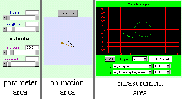 All Java applets in the lab are organized like in this screen snapshot. In the center there is the animation area where the motion of the pendulum is shown. On the left-hand side in the parameter area, various parameters can be changed. In the measurement area either a stopwatch or an oscilloscope is available to measure certain properties of the system. |
The parameter area
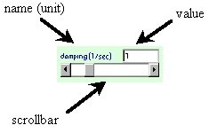 The parameter area shows control panels for several parameters. Each panel shows its verbal name (not the mathematical one!) together with its physical units. Its actual value is shown in a text field. It can be changed either by manipulating the scrollbar or by putting some numbers directly into the text field. Note, that parameters with fixed values are not shown. |
The animation area
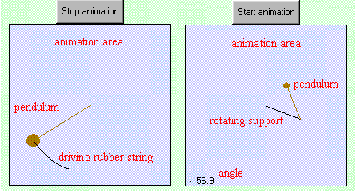 The animation is stopped by pressing the stop button. The motion is resumed by pressing it again. Note, that stopping the animation also stops the stopwatch and the oscilloscope. The motion is also stopped by clicking and dragging with the mouse pointer inside the animation area. In addition, the position of the pendulum is also changed according to the mouse pointer. Thereby, the angular velocity is put to zero. The actual value of the angle (in degree) is shown in the lower left corner. The driving mechanism is visualized in the following way: A periodically stretched rubber band of zero equilibrium length shows driving by a sinusoidal force (left part of the figure). A driven support is visualized by showing the lever mechanism (right part of the figure). |
The measurement area
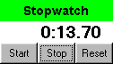 Stopwatch: It works similar to an ordinary stopwatch. It has three different phases which are indicated by the label of the leftmost button. In the stopped state it shows "Start". In the running state it shows "Lap" or "Run" depending on whether the display is updated constantly or not. In the stopped state the stopwatch is started by pressing the leftmost button. The stop and the reset buttons stop the stopwatch. In addition the reset button resets the display to zero. The simulation time runs parallel to the physical time. Nevertheless, the stopwatch doesn't show the physical time because stopping the animation also stops the stopwatch. Its like freezing the time. After animation is restarted, the stopwatch runs again. The time increment is (roughly) given by the inverse frame rate which is 10Hz. |
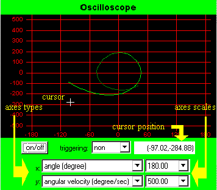 Oscilloscope: It is switch on by the on/off button. The type of triggering, the type of the x- and y-axis, and the scales of the x- and y-axis can be chosen from choice menus. Putting the mouse into the black screen turns the default cursor into a cross-hair cursor. In addition, its coordinates are shown.When the x-axis is the time, the drawing of the curve is restarted at the left side of the axes box after it has leaved the box on the right side. If triggering is activated, drawing is restarted only if the trigger signal just crosses zero from negative values to positive values. In the case of internal triggering, the trigger signal is what is shown on the y-axis (i.e. the angle or the angular velocity). For external triggering it is the phase of driving. Note, that sometimes the pendulum may be in a dynamical state which never fulfills the trigger condition. In this case no curve is drawn. You may also miss the curve if the scale of the x-axis and/or y-axis are too small. When the x-axis is the angle, external triggering turns the oscilloscope into a Poincaré map (more precisely: a stroboscopic map). The Poincaré condition is just the trigger condition. Thus, each point on the screen corresponds to the angle and angular velocity of pendulum at always the same phase of driving. |
|
|
|
|
14. The Lecture Room
|
|
|
The lecture room
Welcome to the lecture room! Here you can learn about the physics and mathematics behind the pendulum experiments.
- The equations of motion
- Oscillations and resonances
- Nonlinear dynamics
- Miscellaneous Topics
- Interesting Web-Links and literature
|
|
|
|
15. The Friction Lab: Applets
|
© 2001, e-mail: Franz-Josef doht Elmer aht unibas doht ch last modified: 2001/09/23 |
Applets |
16. The Friction Lab: Documents
|
© 2001, e-mail: Franz-Josef doht Elmer aht unibas doht ch last modified: 2001/11/25 |
Documents
|
17. Nonlinear dynamics
|
|
|
Parametric Resonance
Parametric resonance is a resonance phenomenon different from normal resonance and superharmonic resonance because it is an instability phenomenon.
1. The instability
The vertically driven pendulum is the only driven pendulum in the lab which has the
same stationary solutions as the undriven pendulum, namely  = 0
= 0 = 180°.
= 180°. = 0
= 0
In order to investigate the stability of a fixed point, you have
to linearize the equation of motion around a fixed point.
For  = 0
= 0
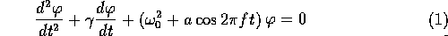
.The same equation holds for
|
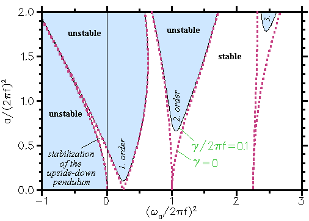 Even though the Mathieu equation is a linear differential equation, it can not be solved analytically in terms of standard functions. The reason is that one of the coefficients isn't constant but time-dependent. Fortunatly, the coefficient is periodic in time. This allows to apply the Floquet theorem. It says that in a linear differential equation or a system of linear differential equations there exists a set of fundamental solutions (from which one can build all other solutions) where all solutions can be written in the formIn the figure the area of instability is shown in blue. It is calculated numerically for a certain value of the damping constant. Note the small area of stability for negative values of is fulfilled, where n is an integer defining the order of parametric resonance. In case of damping, a driving amplitude a exceeding a critical value 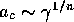 is necessary for destabilization. |
There is a simple intuitive understanding of the parametric resonance condition. And maybe you already have such intuitive knowledge! Imagine you are on a fair and you want to swing a swing boat (did you ever try?). Standing in the boat you have to go down with your body when reaching a maximum because you want to speed the boat up by putting an additional acceleration to the acceleration of gravity. If you do that near the forward and the backward maximum of oscillation, you are just realizing first-order parametric resonance because you are moving periodically up and down with a frequency just twice the frequency of the swing boat. If you go down only every nth maximum you will have parametric resonance of order n.
The onset of first-order parametric resonance can be approximated
analytically very well by the ansatz:
This ansatz is a truncated Fourier series of the periodic function c(t) of the Floquet theorem. It neither decays nor grows. Thus the amplitude a of driving has to be just the critical one
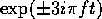
. Now, gather all terms having the factor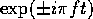
and you will get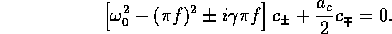
These two equations have a nontrivial solution for
| (3) | 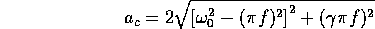 |
This instability threshold has a minimum just at the parametric resonance condition f =
2. Parametrically excited oscillations
|
| QUESTIONS worth to think about: |
|
|
|
|
|
18. Equations of Motion
|
|
|
The Equations of Motion
How can we gain a understanding of whats happening in the lab? In physics the traditional way of thinking is to find the law behind the phenomena. For a mechanical system like the pendulum this means to find all forces governing the motion. That is, to find the equation of motion. First, the equation of motion for the undamped and undriven pendulum will be derived. This is easy. Maybe you know it already from a freshman course in physics. A bit more complicated is the derivation of the equation of motion for various damped and driven pendula. In physical textbooks quite often only the linearized equation of motions are discussed. Yet, most of the phenomena you can observe in the Pendulum Lab are caused by the nonlinearity in the equation of motion. Nonlinear dynamics is therefore the main topic of this mini lecture.
|
|
|
|
19. Oscillations and Resonances
|
|
|
Oscillations and Resonances
A pendulum is a prototypical system of an oscillator. For small angles its equation of motion can be linearized leading to the so-called harmonic oscillator. The harmonic oscillator is a central topic in physics. It has a unique property that is missing in any nonlinear oscillator: The period of oscillation does not depend on the amplitude of oscillation. This is a direct consequence of the superposition principle of linear dynamics. Without this property, it would be impossible to build precise clocks, because controlling the oscillation amplitude with the necessary precision is extremely difficult. The so-called eigenfrequency is a parameter of the system independent from its state. Note, that the prefix eigen is a german word meaning "own". Since the eigenfrequncy is independent from the internal state, it is an ideal fingerprint for identifying a harmonic oscillator. Any method obtaining these fingerprints is called spectroscopy. Most of these methods are based on resonance which is a fundamental behavior of a harmonic oscillator when it is driven by a periodic force. Presumably you have some intuitive knowledge about the resonance phenomenon from swinging a swing: In order to swing very high you have to move forward and backward with roughly the same frequency as the swing would move forward and backward alone.
The pendulum is a nonlinear oscillator. Although nonlinear oscillators share many properties with a harmonic oscillator there is an important difference: The frequency of a nonlinear oscillator depends on the amplitude of oscillation. This leads to bistability and hysteresis because of the foldover effect. Furthermore, resonances not only occur at the frequency of the oscillator but also at integer fractions (superharmonic resonance) and at twice the frequency (parametric resonance).
|
|
|
|
20. Nonlinear Dynamics
|
|
|
Nonlinear Dynamics
What is "nonlinear dynamics"? Isn't it a ridiculous term like "non-elephant zoology"? To understand this phrase, imagine the time when programmable computers didn't exist. In those days it was impossible to solve a differential equation like the equation of motion of a pendulum driven by a periodic force. That is, the solution couldn't be expressed in terms of well-known functions like in the case of the linearized equation of motion. Nonlinear equations of motion can be solved only in rare cases. For that reason, physicists tried to build their theories on linear differential equations because they are easier to solve. And indeed, the most succesful theories (like electrodynamics and quantum mechanics) are based on linear differential equations. Other even older theories dealing with physical phenomenon closer to everday experience, like fluid dynamics, were less successful because their dynamics is nonlinear.
Yet, the advent of computers in the last decades made it possible to tackle unsolvable nonlinear problems. This possibility led to a completely different view onto dynamical systems and in association with it to a new language about dynamical systems. The basic terms of this language are more geometrically oriented. Instead of quantitative solutions (which can be obtained only numerically in nearly all cases), qualitative aspects are of greater interest like the type of solutions, the stability of solutions, and the bifurcation of new solutions. Nonlinear dynamics became famouse because of the possibility of deterministic chaos, i.e., irregular solutions even though the equation of motion is deterministic. This behavior, that is impossible in linear dynamics, was counterintuitive and therefore attracts much attention not only by mathematicians and physicists, but also by other scientists and even by the general audiance interested in scientific topics. Outside the scientific community, nonlinear dynamics is therefore often called chaos theory, even though not all nonlinear systems behave chaotically.
|
|
|
|
21. Miscellaneous Topics
|
|
|
Miscellaneous Topics
Here is a list of some interesting topics which supplement the other sections.
- The upside-down pendulum: Learn how to stabilize a rigid pendulum in its upside-down equilibrium.
- The Lyapunov exponent: This is a quantitive measure of the sensitive dependence on the initial conditions in deterministic chaos.
- Fractals: These are geometrical objects which show structural details at all levels of magnification.
|
|
|
|
22. Links and Literature
|
|
|
Links and literature
Interesting web sites
- sci.nonlinear FAQ
- A detailed list of questions and answers about nonlinear dynamics. Many links to related pages.
- The Non-Linear Lab
- A nice introduction into nonlinear dynamics with many Java applets.
Textbooks
R.H. Abraham and C.D. Shaw: Dynamics: The Geometry of Behavior, (4 volumes), Aerial Press, 1982-88. - Beautiful picture books.
G.L. Baker and J.G. Gollub: Chaotic dynamics -- an introduction, Cambridge University Press, 1990, (2.ed) 1996. - An elementary introduction where the pendulum driven by a periodic force is the central thread. With listings of computer programs.
P. Bergé, Y. Pomeau und Ch. Vidal: Order within chaos -- Towards a deterministic approach to turbulence, John Wiley \& Sons, New York, und Hermann, Paris, 1986. - A classical introduction into nonlinear dynamics from the viewpoint of physics.
J. Guckenheimer and Ph. Holmes: Nonlinear Oscillations, Dynamical Systems, and Bifurcations of Vector Fields, Springer-Verlag, 1983. - A classical and readable textbook about the mathematical aspects of nonlinear dynamics.
E.A. Jackson: Perspectives of nonlinear dynamics, (2 volumes) Cambridge Univeristy Press, 1989. - A broad introduction dealing with many topics including solitons and cellular automata.
P. Manneville: Dissipative Structures and Weak Turbulence, Academic Press, 1990. - A solid introduction into nonlinear dynamics and pattern formation in spatially extended systems.
E. Ott: Chaos in dynamical systems, Cambridge University Press, 1993. - A comprehensive textbook on deterministic chaos.
H.G. Schuster: Deterministic Chaos, Wiley-VCH, 1984, (3.ed) 1995. - A classical introduction into deterministic chaos.
S.H. Strogatz: Nonlinear Dynamics and Chaos, Addison-Wesley, 1994. - An excellent, well readable textbook with many examples and exercises.
|
|
|
|
23. Basic Terms of Nonlinear Dynamics
|
|
|
Basic Terms of Nonlinear Dynamics
Nonlinear dynamics is a language to talk about dynamical systems. Here, brief definitions are given for the basic terms of this language. All these terms will be illustrated at the pendulum.
- Dynamical system:
- A part of the world which can be seen as a self-contained entity with some temporal behavior. In nonlinear dynamics, speaking about a dynamical system usually means to speak about an abstract mathematical system which is a model for such an entity. Mathematically, a dynamical system is defined by its state and by its dynamics. A pendulum is an example for a dynamical system.
- State:
- A number or a vector (i.e., a list of numbers) defining the state of the dynamical system
uniquely. For the undriven pendulum, the state is uniquely defined by the
angle and the angular velocity
 := d/dt.
:= d/dt. - Phase space:
- All possible states of the system. Each point in the phase space corresponds to a unique state. In the case of the undriven pendulum, the phase space has two dimensions whereas for driven pendula it has three. The dimension of the phase space is infinite in cases where the system state is defined by a field.
- Dynamics or equation of motion:
- The causal relation between the present state and the next state in the future.
It is a deterministic rule which tells us what happens in the next time step.
In the case of a continuous time, the time step is infinitesimally small.
Thus, the equation of motion is a differential equation or a system of
differential equations:
where u is the state and t is the time variable. An example is the equation of motion of an undriven and undamped pendulum. In the case of a discrete time, the time steps are nonzero and the dynamics is a map:du/dt = F(u),
with the discrete time n. An example is the baker map. Note, that the corresponding physical time pointsun+1 = F(un), tn do not necessarily occur equidistantly. Only the order has to be the same. That is,n < m impliestn < tm .
The dynamics is linear if the causal relation between the present state and the next state is linear. Otherwise it is nonlinear.
What happens if the next state isn't uniquely defined by the present one? In general, this is an indication that the phase space is not complete. Thus, there are important variables determining the state which had been forgotten. Of course, this is a crucial point while modelling a real-life systems. But beside this, there are two important classes of systems where the phase space is incomplete: The nonautonomuous systems and the stochastic systems. A nonautonomous systems has an equation of motion which depends explicitly on time. Thus, the dynamical rule governing the next state not only depends on the present state but also at the time it applies. A driven pendulum is an example of a nonautonomuous system. Fortunately, there is an easy way to make the phase space complete. Simply include the time into the definition of the state! Mathematically, this is done by introducing a new state variable . Its dynamics readsd/dt = 1, or n+1 = n, depending on whether time is continuous or discrete. For the periodically driven pendula, it is also natural to take the driving phase as the new state variable. Its equation of motion reads
where f is the driving frequency (the angular driving frequency isd/dt = 2  f,
f,2 f).
In a stochastic system, the number and the nature of the variables necessary to complete the phase space is usually unknown. Therefore, the next state can not be deduced from the present one. The deterministic rule is replaced by a stochastic one. Instead of the next state, it gives only the probabilities of all points in the phase space to be the next state. - Orbit or trajectory:
- A solution of the equation of motion. In the case of continuous time, it is a curve in phase space parametrized by the time variable. For a discrete system it is an ordered set of points in the phase space.
- Flow:
- The mapping of the whole phase space of a continuous dynamical system onto
itself for a given time step t.
If t is an infinitesimal time step dt, the flow is just given by
the right-hand side of the equation of motion (i.e., F).
In general, the flow for a finite time step is not known analytically because
this would be equivalent to have a solution of the equation of motion.
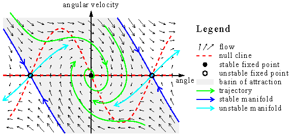
As an example, the figure shows the flow of a damped pendulum. The black arrows of the vector field F are tangential at the trajectories. In a two-dimensional phase space, you can draw a qualitative picture of the flow and the orbits. First, draw the so-called null clines. These are the lines were the time derivative of one component of the state variable is zero. Here, one null cline is the angle axes because the time derivative of the angle is zero when the angular velocity is zero. The other null cline is .
.d and/dtd . At the crossing points of the null clines, the vector field is zero, i.e.,/dtd and/dt =
0d . These points are called fixed points. They correspond to stationary solutions. Fixed points are examples of non-wandering sets. They can be either stable or unstable./dt = 0 - Poincaré section and Poincaré map:
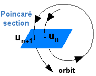
A carefully chosen (curved) plane in the phase space that is crossed by almost all orbits. It is a tool developed by Henri Poincaré (1854-1912) for a visualization of the flow in a phase space of more than two dimensions. The Poincaré section has one dimension less than the phase space. The Poincaré map maps the points of the Poincaré section onto itself. It relates two consecutive intersection points. Note, that only those intersection points counts which come from the same side of the plane. A Poincaré map turns a continuous dynamical system into a discrete one. If the Poincaré section is carefully chosen no information is lost concerning the qualitative behavior of the dynamics. Poincaré maps are invertable maps because one gets un from un+1 by following the orbit backwards. In the Pendulum Lab, you can turn the oscilloscope into a special Poincaré map called stroboscopic map were the Poincaré section is defined by a certain phase of the time-periodic driving.- Non-wandering set:
- A set of points in the phase space having the following property:
All orbits starting from a point of this set come
arbitrarily close and arbitrarily often to any point of the set.
Non-wandering sets are coming in four flavors:
- Fixed points:Stationary solutions. For the undriven pendulum and for the
vertically driven pendulum,
d and/dt = 0d are fixed points./dt = 0 - Limit cycles:Periodic solutions. These solutions are common in weakly driven pendula.
- Quasiperiodic orbits: Periodic solutions with at least two incommensurable frequencies (i.e., the ratio of the frequencies is an irrational number). In the Pendulum Lab, these solutions occur only in undamped but driven pendula.
- Chaotic orbits: Bound non-periodic solutions. These solutions occur in driven pendula if the driving is strong enough.
- Fixed points:Stationary solutions. For the undriven pendulum and for the
vertically driven pendulum,
|
|
|
|
24. The Nature of Deterministic Chaos
|
|
|
The Nature of Deterministic Chaos
While you played with the driven pendula in the lab, you may have discovered that it can behave very erratic. For example, you may have noticed irregular sequences of left and right turns. This behavior, called deterministic chaos, is the most prominent effect of nonlinear dynamics. The term "deterministic chaos" seems to be a contradiction in itself. How can something be deterministic and chaotic at the same time?
1. Sensitive dependence on the initial conditions
A key element of deterministic chaos is the sensitive dependence of the
trajectory on the initial conditions.
As an example, the plot on the left shows the first 15 seconds of a
demonstration of this effect for a horizontally driven pendulum.
The initial conditions are How predictable is a chaotic system? As any deterministic system, it is predictable on a short time scale. But on a long time scale, chaotic systems become unpredictable. They behave seemingly irregular. It is this very behavior why such systems are called "chaotic". Predictability is lost at a time, called prediction horizon, that depends only logarithmically on the uncertaincy of the initial conditions. Thus, the prediction horizon increases fairly slowly with increasing knowledge of the initial condition. There is an ultimate prediction horizon because the error of the initial condition can not be smaller than the unavoidable thermal noise. We can not foresee the future beyond this horizon! It depends on the system how far away this horizon actually is. For the example shown in the plot, it is about 8 seconds. For the weather, it may be roughly 10 days (maybe in places like southern California it can be quite longer). And for the our solar system with all planets, the prediction horizon lies very far in the future, namely, a few million years (luckily, otherwise astronomy wouldn't be the paradigma of successful predictions). |

2. Stretching and folding
 How can we understand
deterministic chaos? Note, that sensitivity on the initial conditions isn't a privilege of nonlinear dynamics.
It also happens in linear systems! For example, take the following time-discrete dynamical system How can we understand
deterministic chaos? Note, that sensitivity on the initial conditions isn't a privilege of nonlinear dynamics.
It also happens in linear systems! For example, take the following time-discrete dynamical systemThe distance between two different solutions increases by the factor two in each time step. But of course, this is not deterministic chaos! It is a kind of explosion (like the population explosion!). Sensitivity on the initial conditions leads to chaos only if the trajectories are bound. That is, the system can not blow up to infinity. With linear dynamics, you can have either sensitivity on the initial conditions or bound trajectories, but not both. With nonlinearities, you can have both. The figure shows why this is possible. Imagine the phase space is a piece of dough from which you want to make flaky pastry for croissants: You roll it out and fold it. Usually you repeat this step a few times. Suppose at the beginning two poppy-seeds are located next to each other. Each time the dough is rolled out the distance between the seeds increases. Eventually, this increase is stopped when the seeds are on different sides of the folding line. At that moment the distance changes unpredictable. Assuming an initial distance of 1 mm and a piece of dough which is 10 cm long, you reach the prediction horizon after only seven rolling-folding steps. Thus, stretching and folding are responsible for deterministic chaos. And there is no folding without nonlinearities! |
3. The baker map
 There is a
simple map on a two-dimensional phase space, called baker map, which is an abstract version of making flaky
pastry: There is a
simple map on a two-dimensional phase space, called baker map, which is an abstract version of making flaky
pastry: (xn-1/2)/2, (xn-1/2)/2,where is the step
function which is 1 for positive arguments and zero otherwise. The baker map is a piecewise linear map of the unity
square onto itself. First, the square is stretch in the x direction by the factor two and squeezed in the
y direction also by the factor two. In the second step, the stretched and squeezed square is cut in the middle
and the right half is put onto the left half. This corresponds to the folding step. Note, that the map preserves
the size of an area during mapping. The sequence of pictures shows the mixing properties of the baker map when it is applied to the
logo of the pendulum lab. |
4. Kneading the phase space of the pendulum
 This animation of a
horizontal pendulum (with the same parameters as above) shows how the phase space is stretched and fold during
one cycle of driving. Contrary to the baker map the phase space shrinks because of dissipation. This animation
was produced by calculating the orbits of 1600 initial conditions which are distributed uniformly over the visible
phase space. After a transient the initial rectangle shrinks neither to a point nor a line but to something which
is called a strange attractor. It has a structure similar to flaky pastry. After each cycle the number of leaves
is increased by some factor. Thus, in the longtime limit the strange attractor has infinitely many leaves (click on
here for having a look at these details). Nevertheless,
the volume in phase space is zero! Such a geometric object is indeed strange. But nowadays, it is well-known
as fractals. This animation of a
horizontal pendulum (with the same parameters as above) shows how the phase space is stretched and fold during
one cycle of driving. Contrary to the baker map the phase space shrinks because of dissipation. This animation
was produced by calculating the orbits of 1600 initial conditions which are distributed uniformly over the visible
phase space. After a transient the initial rectangle shrinks neither to a point nor a line but to something which
is called a strange attractor. It has a structure similar to flaky pastry. After each cycle the number of leaves
is increased by some factor. Thus, in the longtime limit the strange attractor has infinitely many leaves (click on
here for having a look at these details). Nevertheless,
the volume in phase space is zero! Such a geometric object is indeed strange. But nowadays, it is well-known
as fractals. |
| QUESTIONS worth to think about: |
|
|
|
|
|
25. Nonlinear Resonance
|
|
|
Nonlinear Resonance
At the first glance, nonlinear resonance seems not to be so much different from the (linear) resonance of a harmonic oscillator. But both, the dependency of the eigenfrequency of a nonlinear oscillator on the amplitude and the nonharmoniticity of the oscillation lead to a behavior that is impossible in harmonic oscillators, namely, the foldover effect and superharmonic resonance, respectively. Both effects are especially important in the case of weak damping.
1. The foldover effect
|
The nonlinear resonance line can be approximated considerably well (see the green line in the figure) by the following
heuristic approach: Take the resonance line of the harmonic oscillator and replace
the eigenfrequency leads to because the width and the height of the resonance line are proportional to |

2. Superharmonic resonance
If you try to find them for the pendulum driven by a periodic force, you have to choose relatively large driving amplitudes and low values for the damping constant. Nevertheless, you will not find superharmonic resonance at half the eigenfrequency of the pendulum! Why? The reason is symmetry. The undriven pendulum is invariant under reflection symmetry. That is, if you change the sign of |

| QUESTIONS worth to think about: |
|
|
|
|
|
26. Equations of motion of damped and driven pendula
|
|
|
Equations of Motion
of damped and driven pendula
The derivation of the equations of motion of damped and driven pendula extends the derivation of the undamped and undriven case. Damping and driving are caused by two additional forces acting on the pendulum: The damping force and the driving force.
Damping force
An undamped pendulum can be realized only virtually as here in the Pendulum Lab. In reality dissipation of energy
leading to damping is unavoidable. Usually dissipation is included in the equation of motion by adding a viscous
damping term which is a damping constant times the velocity. Thus, the equation of motion of the damped pendulum
reads
| (1) |
d2 |
where
is the damping
constant. Such a force occurs, for example, when a sphere is dragged through a viscous medium (a fluid or a gas).
For a laminar flow (i.e., a flow without eddies) the dragging force is given by Stoke's law 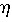
Rv,In general, different damping mechanisms of different strengths are possible. Imagine, e.g., a heavy spherical
mass which hangs at a thin wire rope from the ceiling. Here, the main sources of damping are aerodynamical friction
due to the motion of the mass through the air and friction caused by bending the rope at the suspension point.
Aerodynamical friction follows Stoke's law only for very small velocities. For large velocities, when the flow becomes
turbulent, the friction force increases roughly quadratically. The friction of the rope is caused by plastic deformation
and solid friction if it is made by many fibres.
In both cases, the friction force may dependent on the velocity and other parameters in
a complicated way. In general, a viscous damping force is usually only a phenomenological
force. Even if it is empirically correct, it is often difficult to calculate the damping constant. Here in the Pendulum
Lab, the damping force is always the viscous damping term d /dt
/dt
Driving force
There are several ways to drive a pendulum. The most simplest one is to add a periodic force. This leads to
| (periodic force) |
d2 |
where A and f are the amplitude and the frequency of driving. The amplitude is a length. In the lab the driving is visualized by a rubber string of zero equilibrium length. It has a fictitious spring constant of
Additional comments:
- The viscous damping term is linear. But the driving term is linear only in the case of an external periodic force.
- Driving puts energy into the system which is dissipated by the viscous damping term. Thus, energy is pumped through the system. On average, there is a balance between the work done at the pendulum and the dissipated energy.
| QUESTIONS worth to think about: |
|
|
|
|
|
27. The Horizontally Driven Pendulum
|
|
|
The Horizontally Driven Pendulum
For instructions click on here.
For the equation of motion click on here
| Suggestions for EXPERIMENTS | ||
|
|
|
|
|
28. The Undamped and Undriven Pendulum
|
|
|
The Undamped and Undriven Pendulum
For instructions click on here.
For the equation of motion click on here
| Suggestions for EXPERIMENTS | ||
|
|
|
|
|
29. Damped and Driven Pendula
|
|
|
Damped and Driven Pendula
There are four pendula in the lab which are driven periodically in following way: by a sinusoidal force, by a horizontal, vertical, as well as rotational motion of the suspension point.
|
|
|
|
30. The Pendulum Driven by a Periodic Force
|
|
|
The Pendulum Driven by a Periodic Force
For instructions click on here.
For the equation of motion click on here
| Suggestions for EXPERIMENTS | ||||
|
|
|
|
|
31. The Vertically Driven Pendulum
|
|
|
The Vertically Driven Pendulum
For instructions click on here.
For the equation of motion click on here
| Suggestions for EXPERIMENTS | |||
|
|
|
|
|
32. The Pendulum with Rotating Suspension Point
|
|
|
The Pendulum with Rotating Suspension Point
For instructions click on here.
For the equation of motion click on here
| Suggestions for EXPERIMENTS | |||||
|
|
|
|
|
33. Equation of motion of an undamped and undriven pendulum
|
|
|
The Equation of Motion
of an undamped and undriven pendulum
 According to Newton's
laws the inertia force FI (i.e., mass times acceleration) has to be equal to the applied force.
In our case, the applied force is the restoring force FR caused by gravity G. From the
geometry of the problem (see figure), it is clear that , According to Newton's
laws the inertia force FI (i.e., mass times acceleration) has to be equal to the applied force.
In our case, the applied force is the restoring force FR caused by gravity G. From the
geometry of the problem (see figure), it is clear that ,where m is the mass of the pendulum and g is the acceleration of gravity. Note that the negative sign is caused by the fact that the restoring force FR wants to bring the pendulum back to equilibrium (i.e., = 0).Next, we have to express the inertia force FI in terms of the angle .
Assuming a rigid pendulum (i.e., its length l
is fixed), the mass can move only on a circle with radius l. The position (i.e., the spatial coordinate)
along this circle is given by l.
Note that the angle
is measured in radians (i.e., 180° corresponds to ).
The acceleration is therefore given by /dt2./dt2 = -mg sin.Dividing by ml and moving the term on the right-hand side to the left-hand side leads to the equation of motion of an undamped and undriven pendulum
where
|
Additional comments:
- The mass m of the pendulum does not appear anymore in the equation of motion. Galileo Galilei (1564-1642) was the first who discovered this effect. Maybe you know his legendary experiment of dropping two balls of the same size but of different mass from the tower of Pisa, where both balls had reached the ground simultaneously. From the viewpoint of Newton's laws, there is no reason that the inertial mass (i.e., the m in FI) has to be the same as the gravitational mass (i.e., the m in FR). It was the ingenious idea of Albert Einstein (1879-1955) to take this equality not as accidentally but as a deep principle of nature. From this equivalence of gravitational and inertial mass, he developed a new understanding of gravity which led to his general theory of relativity.
- Although the equation of motion is derived only for a mathematical pendulum (where all the mass is concentrated in one point), it is also true for a physical pendulum with distributed mass. In this case, the parameter l is some effective length which is smaller than the distance between the center of mass and the rotation axis.
- The equation of motion is a second-order differential equation (due to the second derivative of the angle ). In order to get a unique
solution, one needs two real numbers, e.g. the angle and the angular velocity at a specific time. Both
variables define uniquely the state of the undriven pendulum.
- The equation of motion is nonlinear because the second term depends nonlinearly on the angle .
| QUESTIONS worth to think about: |
|
|
|
|
|
34. The linearized equations of motion
|
|
|
The Linearized Equations of Motion
The equation of motion of the pendulum is nonlinear because of the term  02sin
02sin
 . For small angles,
the nonlinear terms can be linearized, i.e.,
. For small angles,
the nonlinear terms can be linearized, i.e.,
 = + O(
= + O( 3)
3) = 1 + O(
= 1 + O( 2).
2).
Thus the linearized equations of motion read
| (horizontal motion) |
d2 |
| (vertical motion) |
d2 |
and
| (rotation) |
d2 |
Additional comments:
- The linearized driving force of a horizontally driven pendulum is identical to the driving force of a pendulum which is driven by a periodic force. Thus, in the linear regime driving the pendulum by a periodic force is equivalent to moving the suspension point of the pendulum horizontally.
- The linearized equation of motion of the pendulum is called harmonic oscillator.
- The driving term in the linearized equation of motion of a vertically driven pendulum is not additive as for the horizontally driven pendulum, but multiplicative. It is a harmonic oscillator where the oscillator frequency is modulated periodically. The equation of motion is the damped Mathieu equation. The driving term leads to an instability called parametric resonance.
| QUESTION worth to think about: |
|
|
|
|
|
35. Harmonic Oscillator
|
|
|
The Harmonic Oscillator
The harmonic oscillator is a canonical system discussed in every freshman course of physics. Thus, you might skip this lecture if you are familiar with it.
1. Basic equations of motion and solutions
The linearized equation of motion of an undamped and undriven pendulum is called a
harmonic oscillator:
| (1) |
|
Nearly all oscillators and oscillations in physics are modeled by this equation of motion, at least in a first
approximation, because it can be solved analytically. It is a linear second-order
differential equation with constant coefficients.
Such a differential equation can be solved easily by the ansatz
= exp(t),02 = 0.0.0t)0t)
| (2) |
|
where C is a complex number and C* denotes its conjugated complex. Because of the superposition principle, the set of fundamental solutions can be arbitrary, except that a fundamental solution has to be independent from the other ones. That is, each fundamental solution can not be written as a weighted sum of the other fundamental solutions. Instead of the complex valued exponential functions, one often chooses
0t)=(exp(i0t)-exp(-i0t))/2i0t)=(exp(i0t)+exp(-i0t))/2| (3) |
|
is a general solution, too. The constants A and B can be expressed in term of C and vice versa.
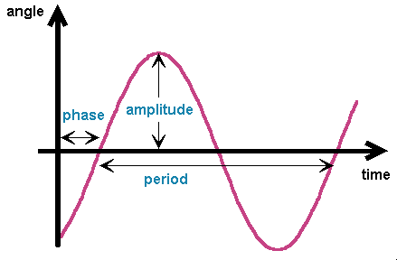 Using the porperties of trigonometric functions, the general solution can also be expressed in a physically more relevant way:
max
(0)/dt|0/0. |
2. Damping
What happens if the harmonic oscilliator is damped? In this case, the equation of motions has an additional term which comes from the damping force:
| (5) |
|
Again, with the ansatz = exp(t), + 02
= 0.
| (6) |
|
|
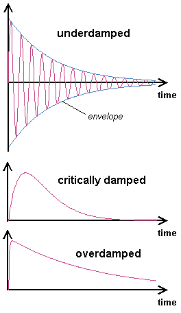 Depending on wether2/402,
|
3. Resonance
Oscillations in a damped harmonic oscillator decay to zero. When it is
driven by a periodic force, one oscillation survives.
The equation of motion of a damped and driven harmonic oscillator reads
| (9) |
|
This is still a linear differential equation, but the sum of two solutions are no longer a solution. The reason for that is the inhomogenous term on the right-hand side. Nevertheless, the superposition principle holds in a modified version. A solution of (9) plus an arbitray solution of (5) (a so-called homogeneous solution) is also a solution of (9). One needs only one solution of (9) (the so-called particular solution) to generate any solution of (9) with the help of the homogeneous solution. Here, a particular solution can be found by the ansatz
| (10) |
|
It turns (9) into a sum with terms proportionally to
f t)f t).02-(2f)2] B + 2f
A = a02-(2f)2] A - 2f B = 0,| (11) |
|
|
In the long-time limit any solution of (9) approaches the particular solution (10)
since any solution of (5) decays to zero. The harmonic oscillator, therefore, oscillates not
with its eigenfrequency 0(t) = max cos(2ft-)
| (12) |
|
and
| (13) |
|
In the underdamped case, the amplitude as a function of the driving frequency has a maximum near the eigenfrequency
0/2. The maximum
is 0). This is by a factor 0/. In the critically damped and overdamped case the resonance line disappears.
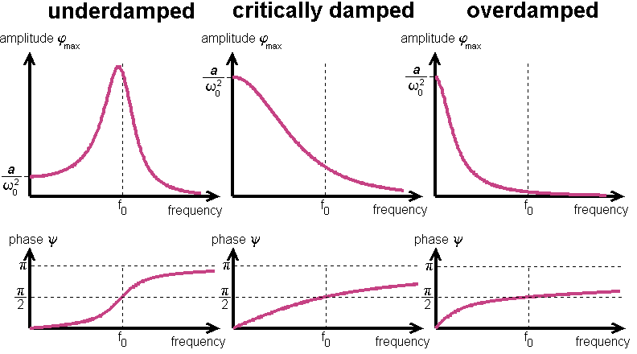
In the limit
| QUESTIONS worth to think about: |
|
|
|
|
|
36. Nonlinear Oscillations
|
|
|
Nonlinear Oscillations
A pendulum is properly modelled by a harmonic oscillator
only for small angles of elongation. Maybe you have
observed in the lab that the period of oscillation increases with increasing amplitude of oscillation. Starting
near the upside-down position, you will find that the period becomes much larger than for small-angle oscillations.
In fact, the period approaches infinity in the limit max180°.
Even though the equation of motion of an undamped and undriven pendulum is nonlinear, one can calculate
its frequency as a function of the amplitude max.
| (1) |
d2 |
| (2) |
E = ½(d |
is a constant during the motion of the pendulum. In the maximum elongation
max,| (3) |
|
Solving (2) for
/dt/dt = ±[2(E+02cos)]1/2.
This first-order differential equation can be solved by separating the independent variable t from the dependent
one . That is, deal with the
differential quotient as if it would be a real quotient on the left-hand side of the equation and all terms with t on the right-hand
side:
/[2(E + 02cos)]1/2 = ±dt.
To get the period of oscillations, integrate over a half cycle
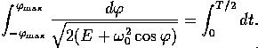
Because the integrand on the left-hand side is an even function in , you will get
| (4) |
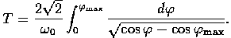 |
Note that E has been replaced by (3).
This integral can not be expressed by elementary functions like polynomials or trigonometric functions. This
is possible only in the limit of max0,/0.max,/2)/sin(max/2)
| (5) |
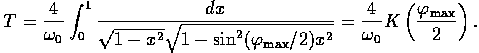 |
|
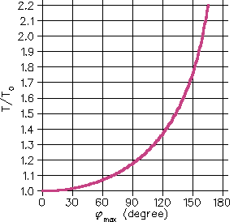 Here are a few properties of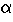 )
Thus, in the limit |
| QUESTIONS worth to think about: |
|
|
|
|
|
37. The upside-down pendulum
|
|
|
The upside-down pendulum
Balancing a pencil on the tip of your finger is difficult, isn't it? But to stabilize a rigid pendulum in the upside-down position is easy! You don't need sophisticated controlling technology. You only need a simple and fast motor moving the suspension point of the pendulum periodically up and down! If you don't believe me, try it in the lab!
How can this stabilization effect be understood? Starting from the equation of motion of a vertically driven pendulum
| (1) |
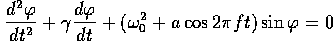 |
and applying the Kapiza method is the easiest way to understand this effect. This method was invented by the russian physicist P.L. Kapiza (1894-1984) in order to treat analytically systems with a natural time scale much larger than the time scale of driving. It is only an approximative method, but it works quite well in cases where these time scales are of different order of magnitude. The method starts with the ansatz
where  slow is the slowly variing part and
slow is the slowly variing part and  fast the fast one.
That is, averaged over the fast time scale yields . Putting this ansatz into the equation of motion
yields two equation, one for the slow time scale:
fast the fast one.
That is, averaged over the fast time scale yields . Putting this ansatz into the equation of motion
yields two equation, one for the slow time scale:
| (2) |
|
and one for the fast time scale:
| (3) |
|
Two approximations are made. First, everything is linearized in
 fast,
fast, slow
slow fast.
fast. slow
slow
Multiply this with
and average over the fast time scale, you will get an equation of motion for
 slow alone:
slow alone:
| (4) |
|
This is an equation of motion for the slowly variing part of the motion. The averaged product of the fast oscillation of the driving and the fast oscillation of the system leads to an effective force on the pendulum. In the upside-down position it is a restoring force. For
it is stronger than the repelling force and the upside-down pendulum is stabilized.
That is, the solution  slow =180° is a stable solution of (4)
and in the framework of the Kapiza method also of (1).
The stabilization of the upside-down pendulum is accompanied by a subcritical
pitchfork bifurcation of (4).
slow =180° is a stable solution of (4)
and in the framework of the Kapiza method also of (1).
The stabilization of the upside-down pendulum is accompanied by a subcritical
pitchfork bifurcation of (4).
Dynamical stabilization is applied in a so-called Paul trap where a single ion can be catched. The ion sits in an equilibrium point of a static quadrupole field. This equilibrium point is unstable as any equilibrium point of a static electrical field. But a rapidly oscillating electrical field (typical frequency 1Mhz) is able to turn it into a stable equilibrium point.
| QUESTIONS worth to think about: |
|
|
|
|
|
38. The Lyapunov exponent
|
|
|
The Lyapunov exponent
A quantitative measure of the sensitive dependence on the initial conditions is
the Lyapunov exponent . It is the averaged rate of divergence (or convergence) of two neighboring
trajectories.
Actually there is a whole spectrum of Lyapunov exponents.
Their number is equal to the dimension of the phase space.
If one speaks about the Lyapunov exponent, the largest one is meant.
It is important because it determines the prediction horizon.
Even qualitative predictions are impossible for a time interval beyond this horizon.
It is given by
|
To obtain the Lyapunov spectra, imagine an infinitesimal small ball with radius dr sitting on the initial state of a trajectory. The flow will deform this ball into an ellipsoid. That is, after a finite time t all orbits which have started in that ball will be in the ellipsoid. The ith Lyapunov exponent is defined by |
| QUESTIONS worth to think about: |
|
|
|
|
|
39. Fractals
|
|
|
Fractals
A fractal is a geometric object which looks similar to itself under a magnifying glass.
This selfsimilarity is a property which is very well illustrated by the Koch curve
or snow flake curve. As it is shown in figure, it is generated by an iterative process.
Even though the Koch curve is bound (i.e., you can draw a circle with
finite radius around it), its length is infinite.
Of course, if your magnifying glass has only finite resolution,
the curve has finite length. That is, if you measure the length with a ruler of finite
length l, you will find that the length L of the Koch curve is also finite.
But if you take a smaller ruler, you will see more details leading to a greater length.
Thus, L is a decreasing function of l. How does it depend on l?
Imagine you have a set of rulers. The biggest one just spans from one end of the
Koch curve to the other one. It defines the length unit. The second largest ruler is just
one third of the biggest one. The third largest ruler is one third of the second largest,
etc. How long is the Koch curve measured with nth largest ruler? It is just the
length of the nth iterate. Thus, the length of the Koch curve measured with the
second largest ruler is four times the length of the second largest ruler, i.e., 4/3.
Here is a table with the results for other iterates:
|
Thus, the length L of the Koch curve diverges for l0 like a power law, i.e.,
where
Kneading the phase space in a dissipative dynamical system leads to a non-wandering set which is also a fractal. It is called a strange attractor if it is an asymptotically stable set. The figure below shows the strange attractor of the horizontally driven pendulum. The sequence of blow-ups clearly shows its fractal nature.
= 1/sec,
| QUESTIONS worth to think about: |
|
|
|
|
|
40. The Friction Lab: An Oscillator with Friction

© 2001, e-mail: Franz-Josef doht Elmer aht unibas doht ch last modified: 2001/11/24 |
Hit the start button and observe a so-called stick-slip oscillation. Details about this experiment:
|
41. The Friction Lab: The Frenkel-Kontorova Model

© 2001, e-mail: Franz-Josef doht Elmer aht unibas doht ch last modified: 2001/11/04 |
Frenkel-Kontorova ModelThe Frenkel-Kontorova model is a harmonic chain (mimic a layer of atoms) in a spatially periodic potential (mimic the substrate). The chain is driven by a constant force and which is damped by a velocity-proportional damping (emitting waves into the substrate).
The equations of motion: Boundary conditions:
|
42. The Friction Lab: The Frenkel-Kontorova-Tomlinson Model

© 2001, e-mail: Franz-Josef doht Elmer aht unibas doht ch last modified: 2001/11/4 |
Frenkel-Kontorova-Tomlinson ModelThe Frenkel-Kontorova model is a harmonic chain (mimic a soft layer of atoms) contected to a rigid upper plate via leaf springs. The chain feels a spatially periodic potential (mimic the substrate). The upper plate is driven by a constant velocity. The chain is damped by a velocity-proportional damping forces (emitting waves into the substrate and into the upper plate).
The equations of motion: Boundary conditions:
|
43. Sensitivity on the initial conditions
Sensitivity on the initial conditions.
|
|
 Franz-Josef.Elmer@unibas.ch
last modified Thursday, July 16, 1998.
Franz-Josef.Elmer@unibas.ch
last modified Thursday, July 16, 1998.
44. Measurement of the period of oscillations
Instructions for measuring the period of oscillation of a pendulum:
- Press the start button of the stopwatch just at the moment when the pendulum is going through its deepest point.
- Count "one", when it goes again through its deepest point (coming from the same side!).
- Repeat counting until "ten". At that moment stop the stopwatch. Dividing the time in the display by ten yields the period of oscillation.
- Measure the period several times to get a feeling for the error of measurment. Note, that the time increment of the stopwatch is roughly 0.1 sec (i.e. the inverse frame rate of animation). Thus, the minimum error of the period achieved by this method is 0.005 sec.
|
|
Franz-Josef.Elmer@unibas.ch
last modified Friday, July 24, 1998.
45. The Friction Lab: Ein Oszillator mit Reibung
flab/coulombSlider/index_de.html
|
© 2001, e-mail: Franz-Josef doht Elmer aht unibas doht ch last modified: 2001/11/25 |
Drücken Sie den 'Start' Button und beobachten Sie die so genannte Haft-Gleit-Oszillation (engl. stick-slip oscillation). Details zum Experiment:
|

46. The Friction Lab: General Applet Instructions

General Applet Instructions
Any applet in the Friction Lab has three areas as shown in the screen shot below. Click on an area to learn about its function.

Animation Control Center
The animation of the experiment is controlled by a few buttons. Usually the following four buttons are always present:- single step
- Proceeds a single step further if animation is not running.
- start
- Starts animation if not already started.
- stop
- Stops animation if not already stopped.
- reset
- Resets the experiment to a predefined initial state.
Parameter Control Center
An experiment is usually controlled by several parameters. You can change these parameters by the control elements. There are two types of control elements:
The parameters of the experiment can be changed even when it is already running. Note: Numerical entries have to be confirmed by pressing the ENTER key in order to become effective.
Animated Experiment
In this area the experiment is visualized. When the start button in the Animation Control Center is pressed you will see the animated dynamics of the system. By manipulating the control elements in the Parameter Control Center you can watch how the behaviour of the system will change.In some experiments you can manipulate objects in this area with the mouse.
The Friction Lab© 2001, e-mail: Franz-Josef doht Elmer aht unibas doht ch, last modified: 2001/11/24